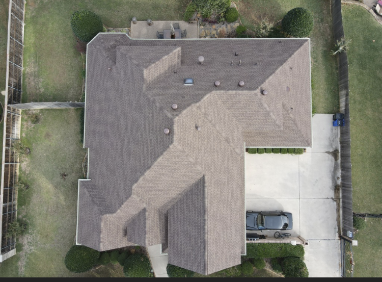
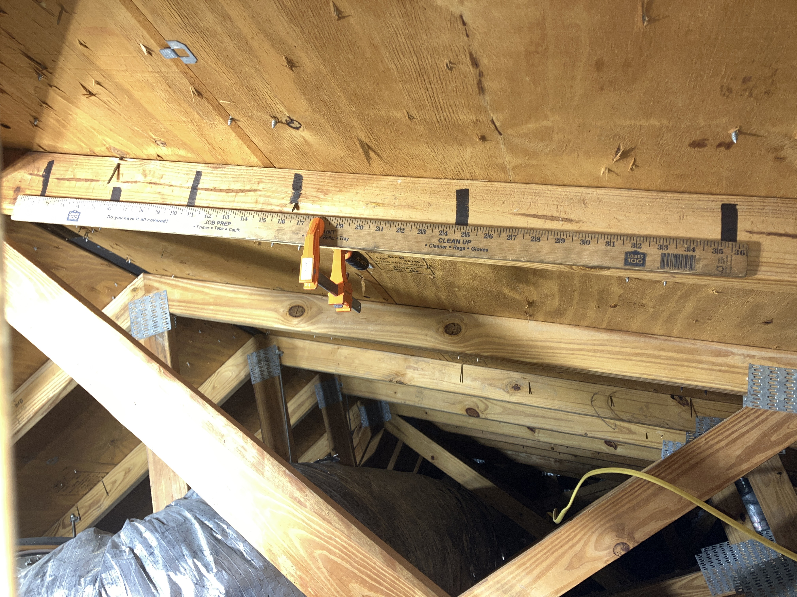
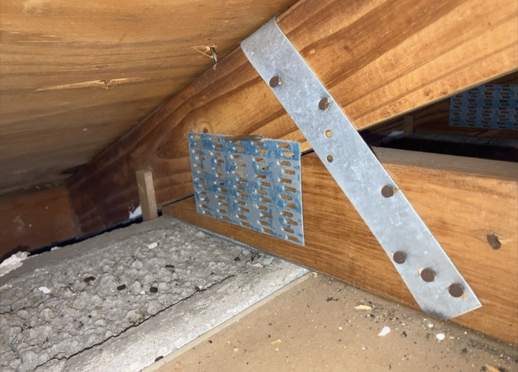
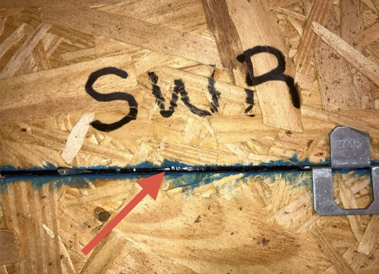
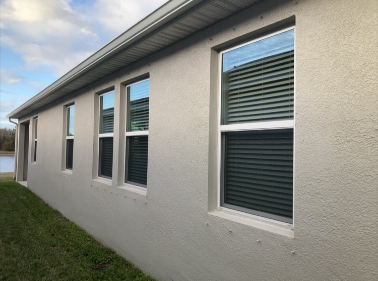

What We Document During a Wind Mitigation Inspection
Florida wind mitigation inspections focus on specific construction features that reduce wind damage.
Roof Covering
We verify the roof covering type and installation age. Newer roofs built to modern Florida building codes typically qualify for better insurance credits.

Roof Geometry
Roof geometry affects how wind travels over a home. Hip roofs typically perform better in hurricane conditions and often receive larger insurance discounts than gable roofs.

Roof Deck Attachment
The roof deck attachment refers to how the plywood roof deck is fastened to the roof framing. Nail size and spacing are documented to determine resistance to wind uplift.

Roof-to-Wall Connections
This inspection verifies how the roof structure connects to the exterior walls. Common connections include hurricane clips, straps, or wraps that secure the roof to the home’s structure.

Secondary Water Resistance (SWR)
Secondary water resistance is an additional moisture barrier installed beneath the roof covering. This extra layer helps prevent water intrusion if roof coverings are damaged during a storm.

Opening Protection
Impact rated windows, hurricane shutters, and reinforced garage doors can significantly reduce wind damage. Insurance companies require documentation showing that all openings are protected to qualify for full mitigation credits.
